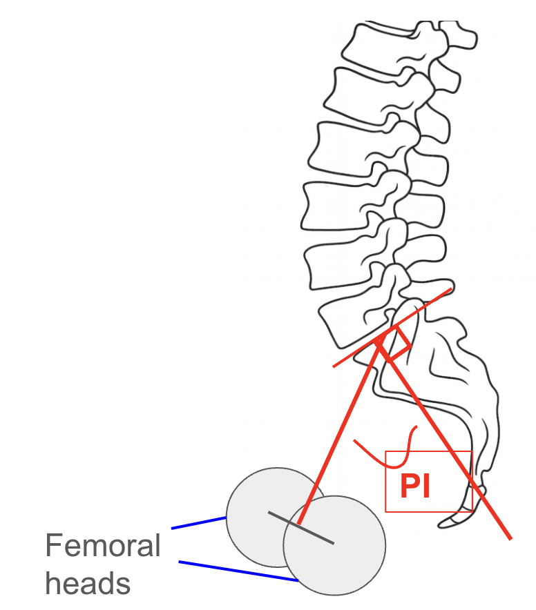
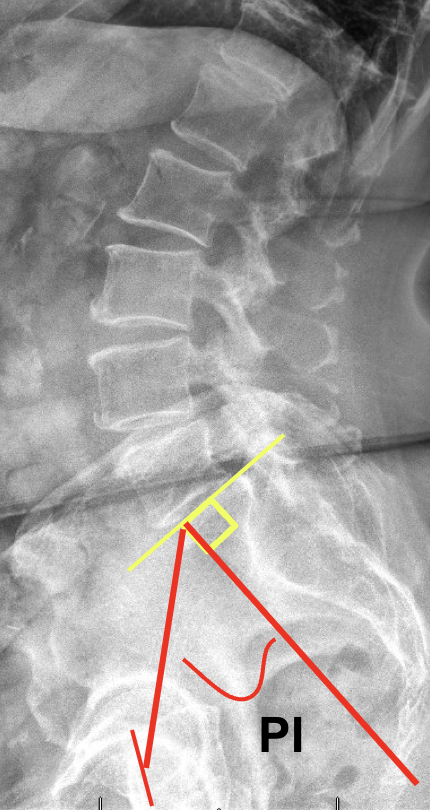

1) Description of Measurement
Pelvic incidence is a fixed anatomical parameter that describes the shape and orientation of the pelvis. It plays a critical role in determining lumbar spine alignment and overall sagittal balance. PI doesn’t change with posture, it’s unique to each individual, like a fingerprint for pelvic-spinal alignment.
2) Instructions to Measure
3) Normal vs. Pathologic Ranges
The average pelvic incidence is approximately 55° ± 10°
But this mean value holds little clinical significance on its own. Pelvic incidence is a fixed anatomical parameter—a unique characteristic of each individual’s pelvic shape that becomes established after skeletal maturity and remains constant regardless of posture or position. There is no such thing as a "good" or "bad" pelvic incidence; rather, it serves as a defining anatomical trait that helps guide assessment of sagittal alignment and spinal balance.
4) Important References
Vialle R, Levassor N, Rillardon L, Templier A, Skalli W, Guigui P. Radiographic analysis of the sagittal alignment and balance of the spine in asymptomatic subjects. J Bone Joint Surg Am. 2005;87-A:260–267. doi: 10.2106/JBJS.D.02043.
Le Huec JC, Aunoble S, Philippe L, Nicolas P. Pelvic parameters: origin and significance. Eur Spine J. 2011 Sep;20 Suppl 5(Suppl 5):564-71. doi: 10.1007/s00586-011-1940-1. Epub 2011 Aug 10. PMID: 21830079; PMCID: PMC3175921.
Place HM, Hayes AM, Huebner SB, Hayden AM, Israel H, Brechbuhler JL. Pelvic incidence: a fixed value or can you change it?. The Spine Journal. 2017 Oct 1;17(10):1565-9.
5) Other info....